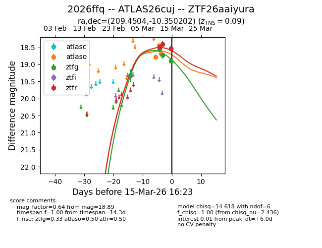
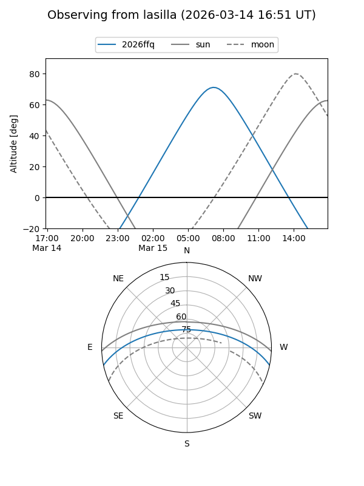
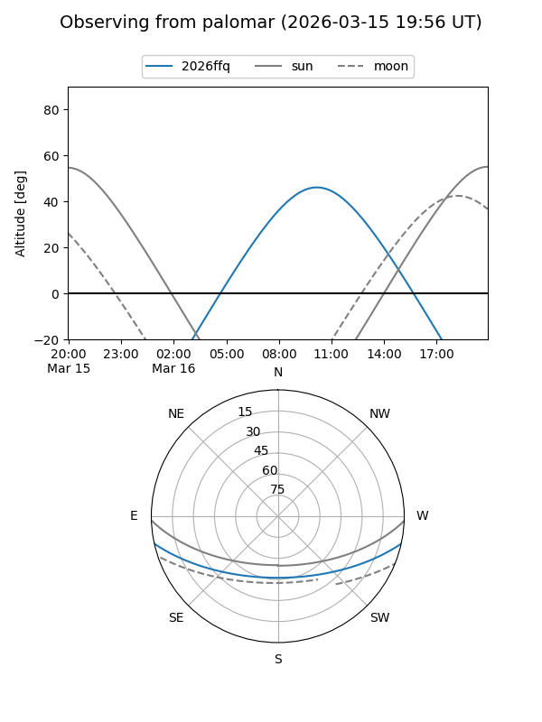
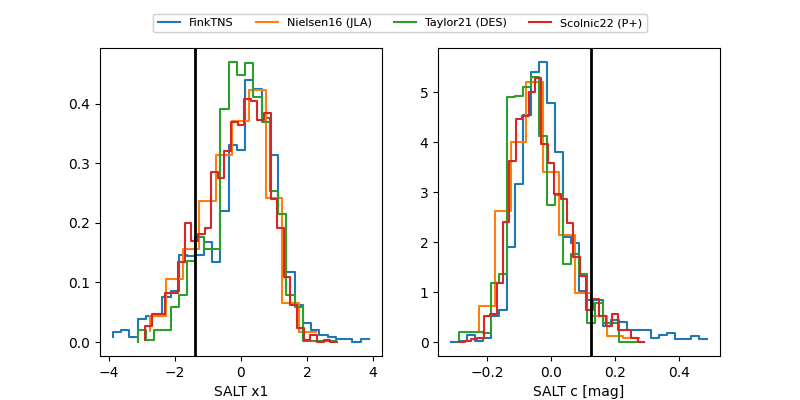

2026ffq
Target 2026ffq at 2026-03-15 16:26
Aliases and brokers:
FINK: link
Lasair: link
ALeRCE: link
TNS: link
YSE: link
alt names
ZTF26aaiyura (ztf,fink_ztf)
2026ffq (tns,yse)
ATLAS26cuj (atlas)
Coordinates:
equatorial (ra, dec) = 209.4504,-10.35020
equatorial (HMS+DMS) = 13:57:48.10,-10:21:00.73
galactic (l, b) = (328.3984,+49.21208)
Flags:
confirmed ia
Photometry:
last atlaso=18.69, ztfg=18.89, ztfr=18.53
3 atlaso, 4 ztfg, 3 ztfr detections
Lightcurve

Visibility


Additional plots
